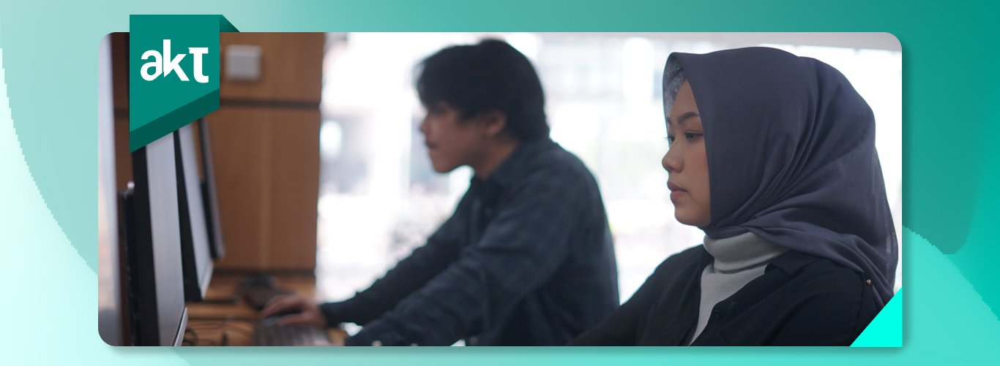
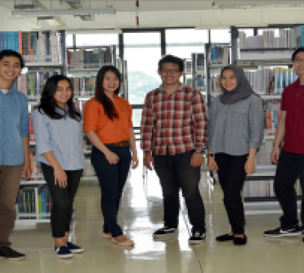

Temukan program studi terbaikmu disini
Akuntansi pada universitas pembangunan jaya memiliki beberapa peminatan yang saat ini banyak dibutuhkan pada dunia kerja, peminatan atau hardskill itulah yang mendorong mahasiswa untuk dapat berkembang lebih baik lagi

Berbagai peminatan yang bisa kamu pilih sesuai dengan yang kamu inginkan
Akuntansi dan Keuangan
Perpajakan
Audit
Akuntansi Manajemen dan Bisnis
Sistem Informasi Akuntansi
Akuntansi Sektor Publik
Galeri
